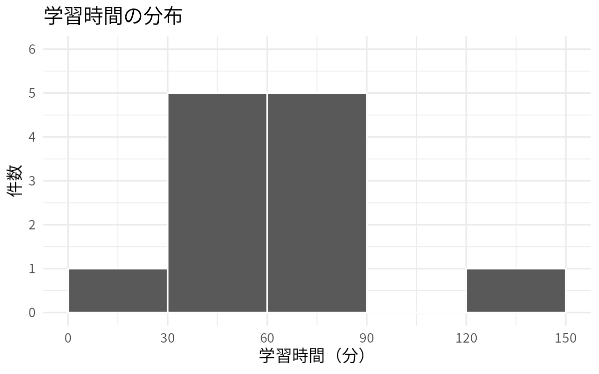
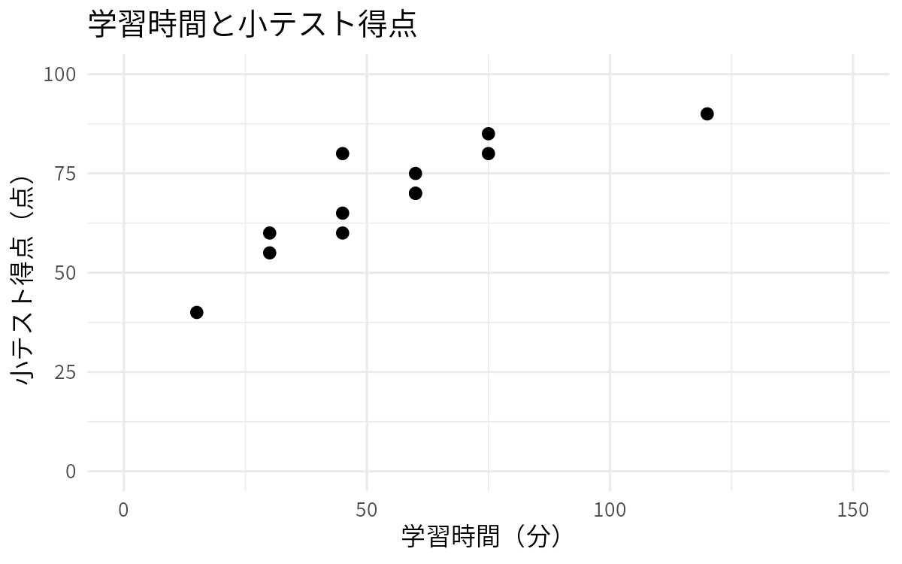
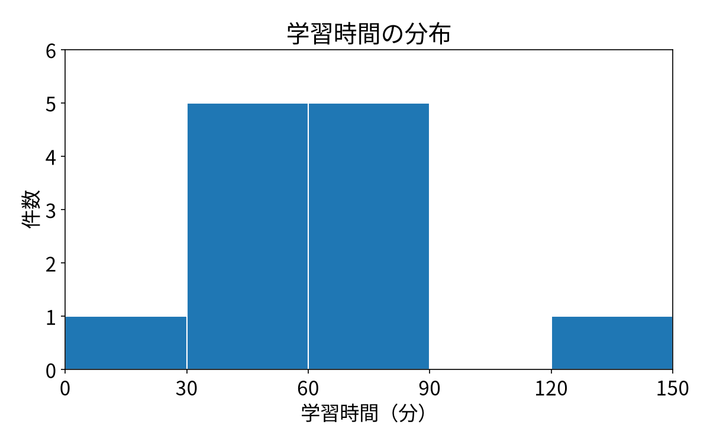
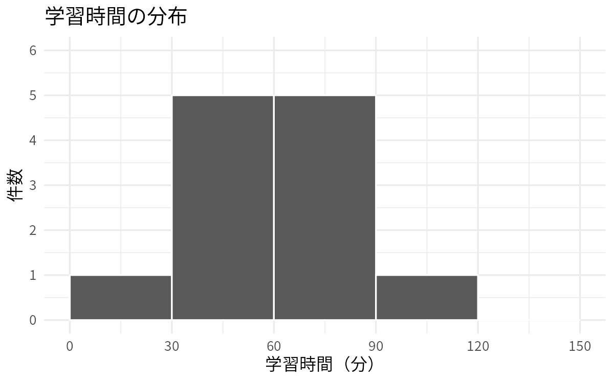
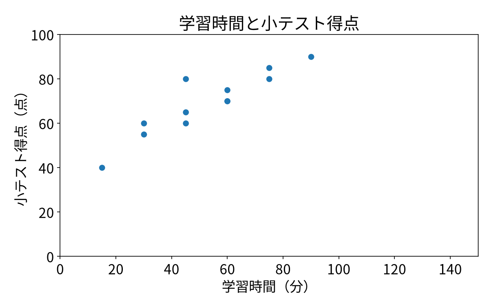

0–5分｜目標
DSプログラミング入門2026｜白濵 成希
出典：学生用§1–2
0–5分｜準備
接続先は WSL: DSProg2026。
work/exercises/lesson04/ に保存。
| 主例 | 演習 |
|---|---|
| lesson04.R | exercise04.R |
| lesson04.py | exercise04.py |
出典：学生用§2
0–5分｜実行方法
出典：学生用§2
5–15分｜予想
学習時間（分）
15, 30, 45, 60, 30, 45, 60, 75, 45, 60, 75, 120
出典：学生用§3
5–15分｜平均
件数は 12。学習時間の合計は 660分。
660 ÷ 12 ＝ 55分
平均は、全体を均したときの値。
出典：学生用§4
5–15分｜中央値
15, 30, 30, 45, 45, 45, 60, 60, 60, 75, 75, 120
12件なら、並べた後の6番目と7番目。
(45 ＋ 60) ÷ 2 ＝ 52.5分
出典：学生用§4
5–15分｜標準偏差
各記録が平均から同じ距離にある、という意味ではない。
出典：学生用§4
5–15分｜定義を揃える
偏差の二乗の合計を割る分母には n と n−1 がある。
今日は n−1＝11 で割り、平方根を取る。
sd(...).std(ddof=1)出典：学生用§4・補足
15–30分｜実行・確認
lesson04.Rを保存して授業タスクで実行。
| 件数 | 平均 | 中央値 | 標本標準偏差 |
|---|---|---|---|
| 12 | 55 | 52.5 | 約27.386 |
合計660÷12と、並べた中央でも確かめる。
出典：学生用§4
15–30分｜区間
区間の境界は 0,30,60,90,120,150。
横軸は学習時間、縦軸は件数。
出典：学生用§5
15–30分｜画像確認

出典：学生環境PNG・学生用§5
15–30分｜座標確認

出典：学生環境PNG・学生用§5
30–45分｜実行・照合

出典：学生環境PNG・学生用§4–5
30–45分｜保存先確認
exercises → lesson04 → output
lesson04_r_hist.pnglesson04_r_scatter.pnglesson04_python_hist.pnglesson04_python_scatter.png画像を開き、軸・単位・棒・点を読む。
出典：学生用§5
45–65分｜予想
Lの学習時間を 120分→90分 にしたら？
出典：学生用§6
45–65分｜作業中はここで待つ
exercise04.R と exercise04.py を開く。
A Lのstudy_minutesだけ120→90。
B quiz_scoreの平均を計算・表示する1行を追加。
保存→全文実行→数値と2枚の図を確認。
出典：学生用§6
45–65分｜必要時のヒント
Copilotにも「説明とヒント」を求められる。
出典：教員用つまずき・学生用§6
65–80分｜仕上げ
exercise04_ から始まるPNGを開く。出典：学生用§6
65–80分｜照合
予想 → 実行結果 → 確かめた方法
出典：学生用§6
65–80分｜演習終了後のみ
| 項目 | 変更前 | 変更後 |
|---|---|---|
| 件数 | 12 | 12 |
| 学習時間平均 | 55 | 52.5 |
| 中央値 | 52.5 | 52.5 |
| 標本標準偏差 | 約27.386 | 約21.690 |
| 得点平均 | 約69.167 | 約69.167 |
出典：教員用期待値・検証
65–80分｜演習終了後のみ

出典：学生環境PNG・教員用期待値
65–80分｜演習終了後のみ

出典：学生環境PNG・教員用期待値
65–80分｜振り返り
例：
「平均も中央値も下がると予想した。実行すると中央値は同じだった。並べた6番目と7番目が変わらないと確かめた。」
出典：学生用§6–7
80–85分｜理解確認
出典：学生用§7
80–85分｜答え合わせ
数値・表・図を行き来して確かめる。
出典：教員用理解確認
85–90分｜提出
出典：学生用§7・Forms仕様
85–90分｜提出確認
同じメールアドレスで、新しい回答を送る。
出典：学生用§7・Classroom案内
85–90分｜まとめ
両ファイルを保存。次回は 乱数と統計的推測。
出典：学生用§8・正式シラバス
85–90分｜質問・確認
保存／実行／数値／画像／提出
どの段階で止まったか、一つずつ確認します。
補足はここから後。今日の必修へ追加しません。
出典：教員用進行・学生用§8
時間外参照｜補足
s = √{Σ(xᵢ − x̄)² / (n − 1)}
今回はn＝12、分母は11。
分母nの標準偏差とは、同じデータでも値が違う。
出典：学生用補足
時間外参照｜補足
出典：教員用つまずき